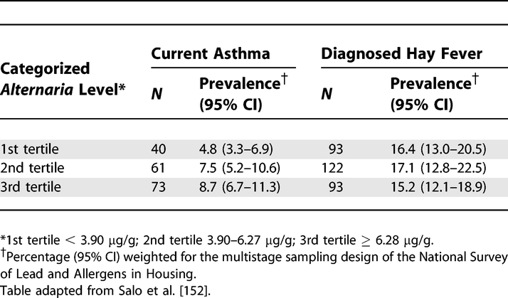

Results: Outcome Data (15)
The items from STROBE state that you should report:
- Cohort study: Report numbers of outcome events or summary measures over time
- Case-control study: Report numbers in each exposure category, or summary measures of exposure
- Cross-sectional study: Report numbers of outcome events or summary measures
Some key items to consider adding:
- Consider the use of a tabular or graphical presentation (Kaplan–Meier, cumulative incidence plot) of the outcome over time for the exposed and comparison cohort
- Report outcomes at all relevant levels of organization
- For proportions and rates, report the numerator and denominator
- For continuous outcomes, report the number of observations and a measure of variability
Explanation
Before addressing the possible association between exposures (risk factors) and outcomes, authors should report relevant descriptive data. It may be possible and meaningful to present measures of association in the same table that presents the descriptive data (see item 14a). In a cohort study with events as outcomes, report the numbers of events for each outcome of interest. Consider reporting the event rate per person-year of follow-up. If the risk of an event changes over follow-up time, present the numbers and rates of events in appropriate intervals of follow-up or as a Kaplan-Meier life table or plot. It might be preferable to show plots as cumulative incidence that go up from 0% rather than down from 100%, especially if the event rate is lower than, say, 30%. (Pocock et al., 2002) Consider presenting such information separately for participants in different exposure categories of interest. If a cohort study is investigating other time-related outcomes (eg, quantitative disease markers such as blood pressure), present appropriate summary measures (eg, means and standard deviations) over time, perhaps in a table or figure.
For cross-sectional studies, we recommend presenting the same type of information on prevalent outcome events or summary measures. For case-control studies, the focus will be on reporting exposures separately for cases and controls as frequencies or quantitative summaries. (Sasieni, 1992) For all designs, it may be helpful also to tabulate continuous outcomes or exposures in categories, even if the data are not analyzed as such. (Vandenbroucke et al., 2007)
Examples
Cohort example
 Rates of HIV-1 Seroconversion by Selected Sociodemographic Variables: 1990–1993
Rates of HIV-1 Seroconversion by Selected Sociodemographic Variables: 1990–1993
https://doi.org/10.1371/journal.pmed.0040297.t004
Case-Control example
 Exposure among Liver Cirrhosis Cases and Controls
Exposure among Liver Cirrhosis Cases and Controls
https://doi.org/10.1371/journal.pmed.0040297.t006
Cross-sectional Example

Prevalence of Current Asthma and Diagnosed Hay Fever by Average Alternaria alternata Antigen Level in the Household
https://doi.org/10.1371/journal.pmed.0040297.t007
Field-specific guidance
Genetic association studies (Little et al., 2009)
- Cohort: Report outcomes (phenotypes) for each genotype category over time
- Report numbers in each genotype category
- Cross-sectional: Report outcomes (phenotypes) for each genotype category
Neonatal infections (Fitchett et al., 2016)
- Report the number (and the proportion) of samples microbiologically tested (including lumbar punctures for meningitis cases); the number (and the proportion) that were positive (including thresholds for detection, where applicable); all isolates obtained (including clinically significant and nonsignificant); and antimicrobial susceptibilities of pathogens, where done
- Report the number (and the proportion) of babies with microbiologically proven infection (and number of infections per baby), and include this in the fl ow chart (see figure 2)
- Report infections by day, for days 0–6. State age categories, if used, defining early-onset and late-onset infection (eg, <72 h and ≥72 h, respectively)
- Report deaths and any subanalyses by risk groups
References
Fitchett, E. J. A., Seale, A. C., Vergnano, S., Sharland, M., Heath, P. T., Saha, S. K., Agarwal, R., Ayede, A. I., Bhutta, Z. A., Black, R., Bojang, K., Campbell, H., Cousens, S., Darmstadt, G. L., Madhi, S. A., Meulen, A. S.-t., Modi, N., Patterson, J., Qazi, S., … Lawn, J. E. (2016). Strengthening the Reporting of Observational Studies in Epidemiology for Newborn Infection (STROBE-NI): An extension of the STROBE statement for neonatal infection research. The Lancet Infectious Diseases, 16(10), e202–e213. https://doi.org/10.1016/S1473-3099(16)30082-2
Little, J., Higgins, J. P. T., Ioannidis, J. P. A., Moher, D., Gagnon, F., Elm, E. von, Khoury, M. J., Cohen, B., Davey-Smith, G., Grimshaw, J., Scheet, P., Gwinn, M., Williamson, R. E., Zou, G. Y., Hutchings, K., Johnson, C. Y., Tait, V., Wiens, M., Golding, J., … Birkett, N. (2009). STrengthening the REporting of Genetic Association Studies (STREGA)— An Extension of the STROBE Statement. PLOS Med, 6(2), e1000022. https://doi.org/10.1371/journal.pmed.1000022
Pocock, S. J., Clayton, T. C., & Altman, D. G. (2002). Survival plots of time-to-event outcomes in clinical trials: Good practice and pitfalls. The Lancet, 359(9318), 1686–1689. http://www.sciencedirect.com/science/article/pii/S014067360208594X
Sasieni, P. (1992). A note on the presentation of matched case-control data. Statistics in Medicine, 11(5), 617–620. https://doi.org/10.1002/sim.4780110506
Vandenbroucke, J. P., Elm, E. von, Altman, D. G., Gotzsche, P. C., Mulrow, C. D., Pocock, S. J., Poole, C., Schlesselman, J. J., & Egger, M. (2007). Strengthening the Reporting of Observational Studies in Epidemiology (STROBE): Explanation and Elaboration. Epidemiology, 18(6), 805–835. https://doi.org/10.1097/EDE.0b013e3181577511